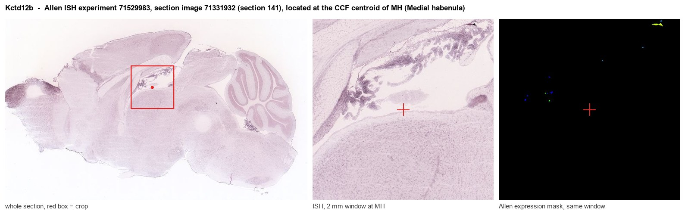
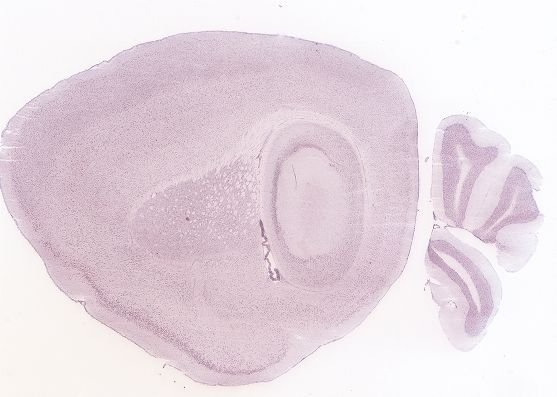
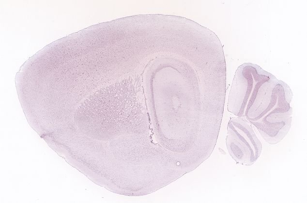
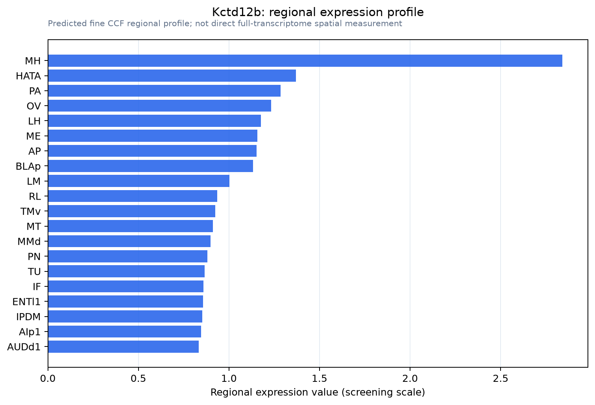

Kctd12b
Potassium channel tetramerisation domain containing 12b
Spatial tier: STRICT_EXCLUSIVE · Class: GPCR · Top region: MH (Medial habenula) · Positive regions: 9/554
44.5Discovery Score
39.9Targetability Score
CEvidence grade C
What this means: Kctd12b: predicted fine-region profile is strict-exclusive, with 9 positive regions out of 554 (limit 12); direct spatial validation is required.
Function in MH: evidence, prediction, innovation
- Gene function
- KCTD12b belongs to the potassium channel tetramerisation domain family and, despite the name, is not a channel. It is an auxiliary subunit of GABA-B receptors: it binds the GABA-B2 subunit, accelerates the onset and desensitisation of GABA-B-evoked currents, and controls where the receptor is trafficked. KCTD8, 12, 12b and 16 give GABA-B receptors their cell-type-specific kinetics.
- Region function
- The medial habenula is an epithalamic relay whose cholinergic/substance P neurons project almost exclusively through the fasciculus retroflexus to the interpeduncular nucleus. This MHb-IPN axis sets nicotine aversion and withdrawal, fear memory expression, anxiety and negative affect.
- Published in this region
- expression only Ren et al. 2022 (J Neurosci) showed that KCTD8 and KCTD12 are required for axonal delivery of GABA-B receptors in habenular cholinergic neurons, the step that makes presynaptic GABA-B excitation possible at MHb-IPN terminals. Bhandari et al. 2021 (eLife) showed that GABA-B auxiliary KCTD subunits at MHb terminals control Cav2.3 R-type calcium channel-dependent release. Kctd12b itself is the habenula-enriched paralog but has not been deleted in isolation.
- Predicted function
- Prediction: KCTD12b confers the fast, strongly desensitising GABA-B kinetics that let the MHb-IPN terminal convert a normally inhibitory receptor into a facilitator of release. Selective Kctd12b deletion should leave GABA-B surface expression intact but slow and prolong baclofen responses at MHb terminals, blunting the phasic potentiation of glutamate release and impairing fear memory expression, with milder effects than deleting Gabbr1 itself.
- Innovation
- ★★★☆☆ 3/5 The KCTD-GABA-B axis in MHb is well studied but the habenula-enriched 12b paralog has never been isolated genetically from its relatives.
- Tools
- Kctd12b knockout and floxed lines from the Bettler laboratory; GABA-B pharmacology (baclofen, CGP54626, CGP55845) to read out the kinetic phenotype; KCTD-specific antibodies from the Bettler laboratory; ChAT-Cre for conditional deletion.
- References
Direct evidence located at the region

Allen ISH experiment 71529983, section image 71331932 (section 141): the section that contains the CCF centroid of Medial habenula according to the Allen image-to-atlas alignment (reference_to_image), with a 2 mm window around that point. Left: whole section, red box = window. Middle: ISH signal. Right: Allen's expression-mask view of the same window. open this image in the Allen viewer
Look it up yourself: Allen Mouse Brain ISH for Kctd12bAllen reference atlas: MH (structure 483)ABC Atlas MERFISH viewer(in the ABC Atlas choose dataset MERFISH-C57BL6J-638850-CCF, colour cells by gene "Kctd12b" or by parcellation_substructure "MH")All genes confined to MH + 3-D brain
Direct spatial evidence
MERFISH REGION LOCATOR

DIRECT ALLEN ISH

DIRECT ALLEN ISH

Regional expression figure

Predicted WMB × fine-CCF profile; not direct full-transcriptome spatial measurement.
Spatial profile
Evidence and specificity
- Evidence status
- PREDICTED_FINE
- Direct sources
- None; predicted localization only
- Exclusive threshold
- 12 positive regions out of 554
- Spatial specificity
- 0.290
- Top-region fraction
- 0.077
- Filter status
- PASS
Interpretation limits
- Cell-type-to-region projection is imputed expression, not direct spatial measurement.
- Adult reference atlases do not establish stability across age, sex, strain, state, or disease.
- Transcript abundance does not guarantee protein abundance or genetic-tool performance.